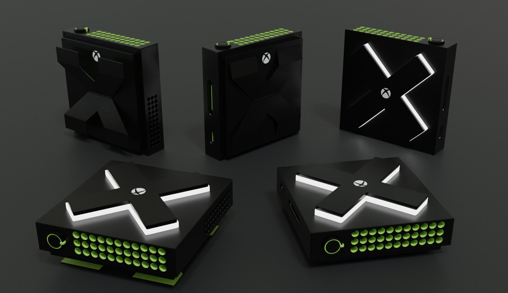
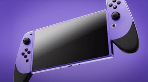
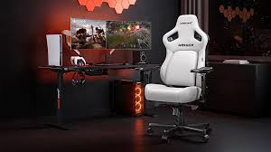
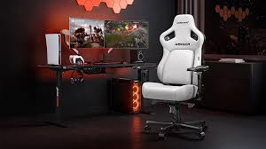

1. PlayStation 6 (PS6) – The Ultimate 8K Gaming Beast
The PS6 is a game-changer with its 8K ultra-HD graphics, 3D spatial audio, advanced haptic feedback, and AI-powered performance optimizations. Powered by a custom AMD chipset and cutting-edge GPU, it redefines console gaming technology.
2. Xbox Series Z – Powerhouse for Game Pass Lovers
The Xbox Series Z offers lightning-fast load times, 120FPS 4K gameplay, seamless cross-platform integration, and access to over 500+ titles via Xbox Game Pass. The redesigned controller offers improved ergonomics and customizable inputs.

3. Nintendo Switch Pro – 4K Portable Gaming Console
The Nintendo Switch Pro blends portability with power, now featuring a 4K OLED screen, extended battery life, joy-con drift fix, and exclusive titles like Zelda: Kingdoms Unleashed and Mario Infinity. Perfect for gamers on the move.


 
